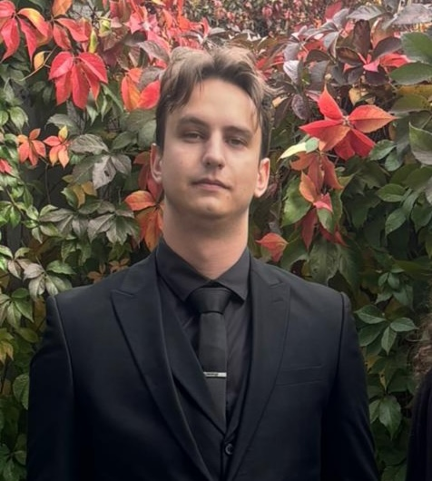

Aleksa Diklić Art

Hello, and welcome to my portfolio. I’m Aleksa Diklić, a graphic designer and illustrator working toward a career in the gaming industry. I’m drawn to character and environment art, and to the way strong visual choices can help give a game its own atmosphere. I use Photoshop, Illustrator, and Blender to explore ideas and develop them into finished digital pieces.
About me
I have a bachelor’s degree in industrial design and have explored a range of art forms over the years, which continues to shape how I approach each project. Outside digital work, I paint and work as a tattoo artist. Take a look around, and get in touch if you’d like to discuss a collaboration.